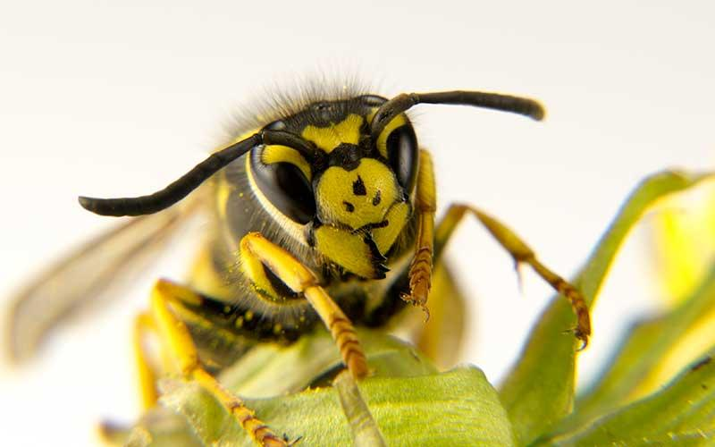
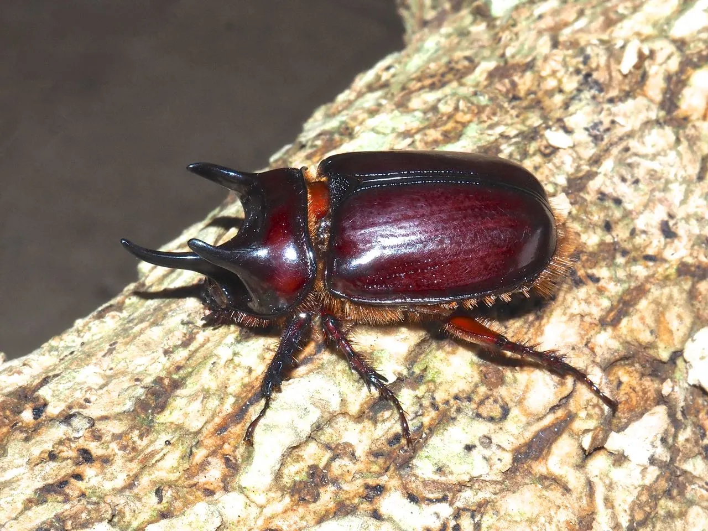

Las Abejas
Los antófilos (Anthophila, del griego ‘que aman las flores’), conocidos comúnmente como abejas, son un clado de insectos himenópteros, sin ubicación en categoría taxonómica, dentro de la superfamilia Apoidea.

Se trata de un linaje monofilético con más de 20 000 especies conocidas. Las abejas, al igual que las hormigas, evolucionaron a partir de himenópteros aculeados. Los antepasados de las abejas estaban relacionados con la familia Crabronidae y eran depredadores de insectos.
Las Arañas
Las arañas (Araneae) son el orden más numeroso de la clase Arachnida, lejanamente emparentadas con otros grupos de artrópodos, como los insectos, con los que no deben confundirse.
El grupo está abundantemente representado en todos los continentes, excepto en la Antártida. Todas son depredadoras, generalmente solitarias, de pequeños animales. El orden Araneae es el séptimo en diversidad total de especies respecto al resto de diversidad de organismos.

Las Avispas
El término avispa se aplica de diversas maneras a distintos taxones de insectos del orden Hymenoptera.

La definición más extensa es la que considera avispa a todo himenóptero no clasificado como hormiga o abeja.Más estricta es la definición de la RAE, según la cual «avispa» es el insecto himenóptero de tamaño moderado (1-1,5 cm para la mayoría, pero de hasta 5 cm en el caso del avispón gigante de Asia Vespa mandarinia), de color amarillo con bandas negras, dotado de aguijón venenoso y que vive en sociedad.
Los Escarabajos
Los coleópteros comúnmente conocidos como escarabajos, son un orden de insectos de entre 375 000 y 400 000 especies descritas; tiene tantas especies como las plantas vasculares o los hongos y 66 veces más especies que los mamíferos
Los coleópteros presentan una enorme diversidad morfológica y ocupan virtualmente cualquier hábitat, incluidos los de agua dulce, aunque su presencia en ambientes marinos es mínima. La mayoría de los coleópteros son herbívoros, y muchas especies pueden constituir plagas de los cultivos, siendo las larvas las que causan la mayor parte de los daños agrícolas y forestales.
